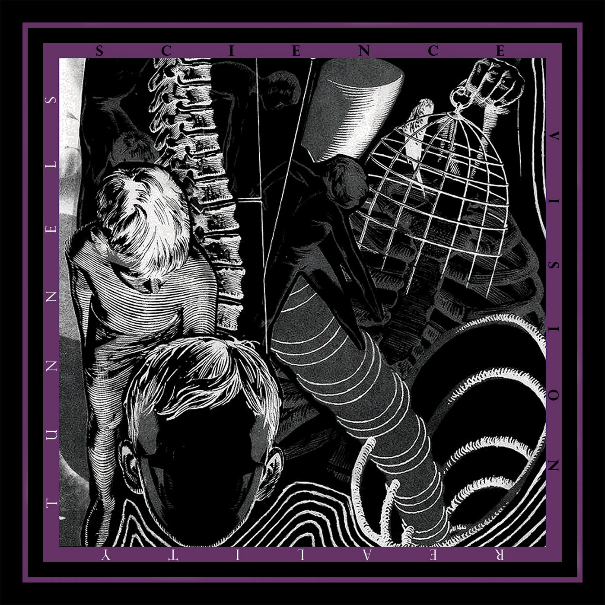

sciencevision - reality tunnels
catalog: ar-005
year: 2020
format: cassette
This album focuses on Adam Hess's songwriting and was recorded over the span of two years. The songs are more focused than the previous Sciencevision releases but there is still a new age undercurrent and room for studio experimentation. Originally released only as promotional copies, proper repress coming in 2022.
1. arrive alive
2. denial song
3. sunlight siege
4. rain coming my way
5. kick up dust
6. you made the room
7. new june
8. learned from inversion
9. yinsecurity
10. california stranger
2. denial song
3. sunlight siege
4. rain coming my way
5. kick up dust
6. you made the room
7. new june
8. learned from inversion
9. yinsecurity
10. california stranger
*** sold out ***